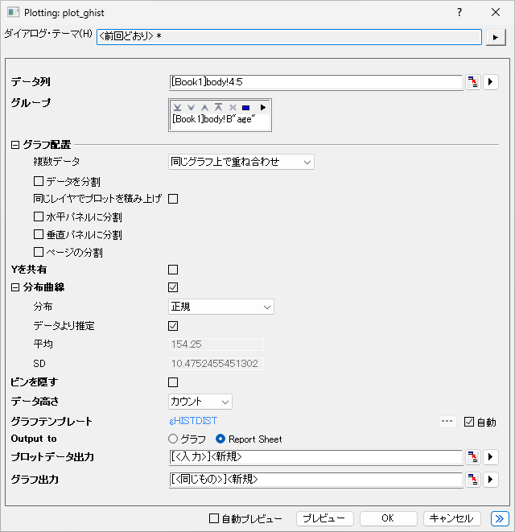

グループ化ヒストグラム
grouped-histogram

要求されるデータ
入力データとして最低1つY列が必要です。
オプションで、各Y列に対応するYエラー列を持たせることもできます。
グラフ作成
作図 > カテゴリカル : グループ化ヒストグラム を選択して、plot_ghistダイアログを開きます。
開いたダイアログで、入力データ範囲を選択します。最低でも1つのグループ列を追加し、計算データの出力先を指定します。グループ化ヒストグラムが生成されます。
ダイアログの内容に関する詳細は、次のセクションを参照してください。
plot_ghistダイアログボックス

| データ列
|
この欄は、入力データを指定するのに使用します。
|
| グループ
|
入力データを複数のプロットに分割するには、グループ列を選択します。
|
| グラフ配置
|
- 複数データ：複数入力データの配置方法を選択します。
- 同じグラフ上で重ね合わせ: 選択した入力データを、同じグラフレイヤ上に重なり合ったプロットとしてプロットします。
- 同じグラフ内でレイヤを分ける：選択された入力データを同じグラフページ上の別々のレイヤに個別にプロットします。
- グラフを分ける: 選択した入力データを別のグラフウィンドウにプロットします。
- データを分割
- 複数データがグラフを分けるに設定されていない場合、このコントロールが表示されます。列ラベル行を選択して、複数のデータを異なるデータグループに分割することができます。
- 複数データグループ
- データを分割で列ラベル行を選択した場合、データグループの配置方法を個別のレイヤまたはグラフを分けるから選択できます。
- 同じレイヤでプロットを積み上げ: チェックを付けると、列をグループ化して分割したすべてのプロットが同じレイヤに積上げられます。
- 水平パネルに分割：このチェックボックスをオンにすると、別のグループ化列を指定して、横方向にパネルを分割できます。各グループ値に対して、個別のヒストグラムが表示されます。
- 垂直パネルに分割にチェックが付いていない場合、区分の折り返しが有効で目盛やラベルは、左右交互に表示されるのが初期設定です。
- 複数の列でグループ化している場合でも、パネル情報ラベルは1行のみが上部に表示されます。パネルのバナー文字列としてすべての因子（グループ値）がカンマ区切りで表示されます。
- 垂直パネルに分割：このチェックボックスをオンにすると、別のグループ化列を指定して、縦方向にパネルを分割できます。各グループ値に対して、個別のヒストグラムが表示されます。
- 水平パネルに分割にチェックが付いていない場合、区分の折り返しが有効で目盛やラベルは、左右交互に表示されるのが初期設定です。
- 複数の列でグループ化している場合でも、パネル情報ラベルは1行のみが上部に表示されます。パネルのバナー文字列としてすべての因子（グループ値）がカンマ区切りで表示されます。
- ページの分割：このチェックボックスをオンにすると、別のグループ化列を指定して、入力データを分割し、異なるグラフページにグループ化棒グラフを作成できます。各ページには、同じページ関連グループに属する列だけがプロットされます。ページに関連するグループ情報は、レイヤータイトルにカンマ区切りで表示されます（複数因子がある場合）。レポート用のグラフシートには、すべてのページが一覧表示されます。
|
| Yを共有
|
複数の列が入力として選択された場合、複数データが同じグラフ上でレイヤを分離に設定すると、このボックスにチェックを入れて、同じグラフ上の複数のレイヤでY軸スケールを共有することができます。
|
| Xとビンを共有
|
チェックを付けると異なるレイヤと異なるグラフ間でXスケールとビン設定を共有します。
|
| 分布曲線
|
ヒストグラムに分布曲線を追加するかどうかを指定します。
- 分布: 分布関数を選択して、ヒストグラム上に分布曲線を重ねます。
- データより推定: このボックスをチェックすると、Originは曲線のパラメータ値を推定できます。次のボックスでカスタムパラメータ値を設定するには、チェックを外します。
- パラメータ:データより推定ボックスのチェックを外すと、パラメータボックスがアクティブになり、カスタム値を入力して曲線を描くことができます。
分布曲線の詳細については、作図の詳細ダイアログの分布タブで確認できます。
|
| ビンを隠す
|
分布曲線を追加すると、このボックスをチェックしてヒストグラムバーを非表示にすることができます。
|
| データ高さ
|
データをバーの高さとして指定します。作図の詳細ダイアログのデータタブのデータ高さコントロールを参照してください。
|
| グラフテンプレート
|
必要に応じてユーザテンプレートを指定します。デフォルトでは、自動チェックボックスがオンになっており、組み込みテンプレートHistが使用されています。
|
| 出力先
|
グラフを出力する場所として、別のグラフウィンドウまたはレポートシート内に埋め込む場所を指定します。
|
| プロットデータ出力
|
計算したデータの出力先を指定します。
|
| グラフ出力
|
結果グラフを出力するシートを指定します。
|
さらに、このダイアログでは作成されるグラフをプレビュー出来ます。
| Note: グループ範囲はデフォルトでアルファベット順にソートされますが、変更したい場合、列をカテゴリーとして設定し、カテゴリータブで順序を編集します。
|
テンプレート
Hist.otpu
(OriginのEXEフォルダにインストールされています。)
メモ
グループ、パネルの分割、ページの分割ボックスで複数の列を選択できます。
バージョン情報